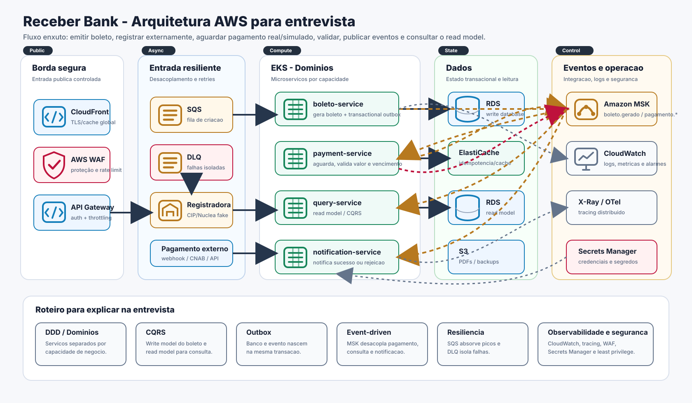

Receber Bank
Plataforma de recebimentos bancarios baseada em microservicos, eventos de dominio e separacao entre escrita e leitura para emissao, consulta, pagamento e notificacao de boletos.
Java 21 Spring Boot 3.2 PostgreSQL Redis Kafka/Redpanda EKSVisao Geral
O projeto moderniza uma area de recebimentos sem dependencia de mainframe. A arquitetura usa servicos independentes, eventos Kafka, transactional outbox e um read model dedicado para consultas.
Arquitetura Para Entrevista
Diagrama enxuto para apresentacao em whiteboard: destaca os recursos AWS, a jornada principal e as metodologias arquiteturais usadas no case.

| Camada | Local | AWS |
|---|---|---|
| Entrada | REST local em containers | API Gateway, ALB Ingress e SQS |
| Compute | Docker Compose | EKS |
| Dados | PostgreSQL e Redis | RDS PostgreSQL e ElastiCache Redis |
| Eventos | Redpanda | Amazon MSK |
| Observabilidade | Actuator | CloudWatch, Prometheus e tracing |
Servicos
| Servico | Porta | Responsabilidade | Topicos |
|---|---|---|---|
boleto-service |
8081 |
Cria boletos, consulta modelo de escrita, usa Redis para apoio a idempotencia e publica eventos pela outbox. | Produz boleto.gerado |
query-service |
8082 |
Mantem o read model e expoe consultas por boleto ou status. | Consome os eventos do dominio |
payment-service |
8083 |
Consome boleto gerado e processa a efetivacao de pagamento. | Consome boleto.gerado, produz pagamento.efetivado |
notification-service |
8084 |
Gera notificacoes a partir de eventos de boleto e pagamento. | Consome boleto.gerado e pagamento.efetivado, produz notificacao.enviada |
Fluxos
Cliente envia `POST /boletos`; o `boleto-service` valida a requisicao e cria o agregado de boleto.
O boleto e salvo em PostgreSQL e o evento `boleto.gerado` e gravado em `outbox_events` na mesma transacao.
A registradora bancaria e representada por uma API simulada em `POST /simulacoes/registradora/boletos`, deixando claro o limite com sistemas externos.
`payment-service` consome `boleto.gerado` apenas para saber quais boletos existem; ele nao efetiva pagamento automaticamente.
O pagamento chega por `POST /simulacoes/pagamentos`, simulando retorno bancario, webhook, arquivo CNAB ou parceiro externo.
O pagamento e aprovado se valor pago for igual ao valor do boleto e se a data recebida estiver dentro do vencimento. Caso contrario, gera `pagamento.rejeitado`.
`query-service` atualiza o read model e `notification-service` notifica o resultado para o cliente PJ.
APIs
Boleto service
| Metodo | Endpoint | Descricao |
|---|---|---|
POST |
/boletos |
Cria um boleto e retorna `201 Created` com `Location` apontando para o recurso. |
GET |
/boletos/{id} |
Consulta um boleto pelo identificador no modelo de escrita. |
Query service
| Metodo | Endpoint | Descricao |
|---|---|---|
GET |
/consultas/boletos |
Lista boletos do read model. Aceita filtro opcional `status`. |
GET |
/consultas/boletos/{boletoId} |
Consulta um boleto no read model pelo identificador. |
Simuladores do case
| Servico | Endpoint | Descricao |
|---|---|---|
boleto-service |
POST /simulacoes/registradora/boletos |
Representa a API externa de registradora bancaria/CIP/Nuclea para fins de apresentacao. |
payment-service |
POST /simulacoes/pagamentos |
Simula chegada de pagamento externo e publica pagamento.efetivado ou pagamento.rejeitado. |
Demo Postman/Insomnia
As colecoes versionadas no repositorio guiam a apresentacao ponta a ponta: health checks, criacao do boleto, registro externo simulado, pagamento aprovado, consulta CQRS e cenario de rejeicao por regra de negocio.
docs/api/receber-bank.postman_collection.json
docs/api/receber-bank.insomnia.jsonNo Postman, as variaveis da jornada sao capturadas automaticamente. No Insomnia, copie os campos da resposta de criacao do boleto para o ambiente antes de seguir.
Ambiente Local
Use Maven Wrapper para build/testes e Docker Compose para subir a stack completa.
cd receber-bank-services
./mvnw clean test
docker compose up --buildDependencias locais expostas:
PostgreSQL: 5432 Redis: 6379 Kafka/Redpanda: 9092AWS e Kubernetes
O repositorio contem base de infraestrutura em `receber-bank-services/infra/aws/terraform` e manifests Kubernetes em `receber-bank-services/k8s/aws`.
| Area | Recursos |
|---|---|
| Rede e compute | VPC, subnets, NAT, EKS, node group e ALB ingress. |
| Dados e mensagens | RDS PostgreSQL, ElastiCache Redis, SQS, MSK e S3. |
| Seguranca | Security Groups, IAM/IRSA, Secrets Manager e Kubernetes Secrets de exemplo. |
| Operacao | CloudWatch, logs, metricas e endpoints Actuator. |
GitHub
Esta documentacao e publicada a partir da pasta `docs` usando GitHub Actions. Para ativar, envie o projeto para um repositorio GitHub e selecione GitHub Actions como origem do Pages.
git remote add origin https://github.com/SEU_USUARIO/receber-bank.git
git push -u origin mainO workflow tambem pode ser executado manualmente pela aba Actions.